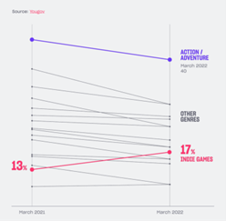
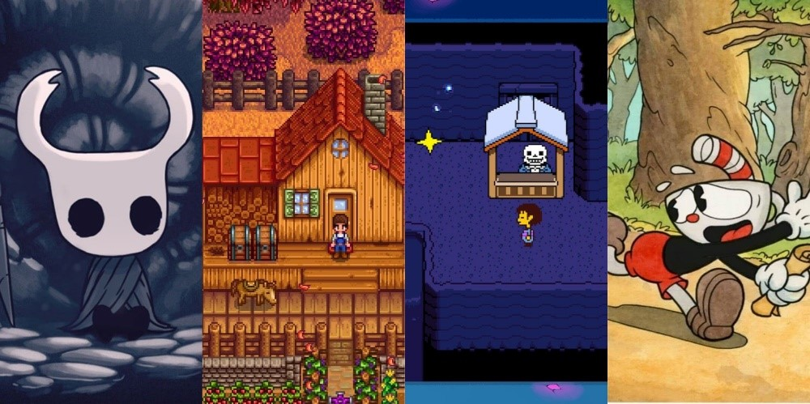
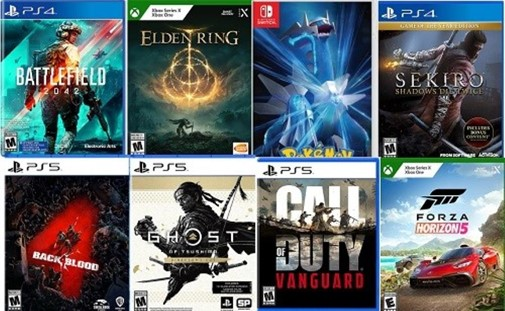

Freelancing in the Games Development Sphere: Is it worth it?
In the growing industry of Games Development, it’s important to create a strong online presence and stand out among your peers. Maintaining a consistent digital footprint through regular/consistent progress updates on your ongoing projects allows you to receive constructive feedback on things you can improve and opens opportunities to learn things you hadn’t know before and, at the same time, builds a repitoire of your experiences to stand out to potential employers in an increasingly competitive marketplace.

To start off, an “indie” game developer, or rather an independent game developer is a small group of people, or even a sole person who has made their own makeshift studio in order to make their own game projects. Naturally, this role brings a lot of freedom in what you can do as a games developer as with most freelancing jobs: you are completely independent and are able to work on whatever you wish for. In a perfect world, this should be totally sustainable; however, this is not a perfect world, and not every person can pull off the success of games such as Hollow Knight and Hollow Knight: Silksong from Team Cherry, hitting over 6 million downloads in only one month (1), or game developers Pocketpair, which had taken a shot against Nintendo with their game Palworld, for somewhat obvious reasons; however, it’s because of these reasons that it got so popular: it was going directly against and innovating on one of the world’s most beloved franchises. This sort of success requires a lot of investment into making a new, innovative game, it’s advertisement methods and most of all an enormous amount of luck to get explosively popular.

However, in 2025/2026 it may be slightly easier to get into this field, as more and more gamers are turning to the indie game development scene, seeing as the AAA scene isn’t doing so great as of late; the interest of indie games has grown by 5% from 2021 to 2024 across western PC and Console gamers (2). The appeal that the nature of indie games bring, being more community centred and having this “home-made” feel to them adds to the unique experiences to each one and is slowly turning into a change of how videogames are made in the industry. This current attention that indie games have will naturally allow you to have some heads turn if you were to announce a new indie game you have been working on.

Being an indie game developer also makes you and your potential team bear the burden of handling finances, management and resources all by yourselves. An indie game developer also has to have a “jack of all trades” type of knowledge, especially when working in very small teams or completely solo. You will have to know how to code, interact with the game engine of your choice, make assets (or buy) assets, basic knowledge of audio design, etc. However, not all of the assets and workload of your game projects have to be done by your team alone, as when the budget allows, Game Outsourcing is a great option to rely on especially when a dev team does not cover all talents across the board. What is expected of a single dev team to make a game can be slightly lifted by outsourcing your workload to an external team to make assets, audio or other such things. In short, being an indie game developer is extremely difficult, and may not be sustainable at all, however with the most recent advancements in game engines, the rising popularity of indie games and the options of outsourcing depending on the budget of your project, it is easier to excel in the indie sphere than ever before.
Next, the other type of freelancing takes the form of having short-term contracts with bigger studios, typically AAA studios and working for only a couple of months at a time. Usually this is a lone pursuit, as only one person gets hired for this short-term contract at a time, which could last either a few weeks or upwards to a couple of months. This type of freelancer is also known as a contractor. This role brings less freedom than being an indie game dev, but still ultimately allows you the freedom to choose which projects you wish to work on, giving you more control over your choices compared to an employee.

This career path can potentially also be much more sustainable, as companies are constantly looking to outsource their workload, whether it be a AAA dev studio or an indie one; your career’s success is not limited to the success of your final product, nor the current climate of the gaming sphere (to a generous extent) but rather the performance in your singular role. The skills to fulfil this role will also require you to have a vast amount of knowledge across as many subjects as possible, as you never know what type of work you might land on; additionally, unlike a game developer, you won’t be able to outsource your workload. However, you may still have to dedicate a great amount of time to search for current and especially future projects, even if you were working on one already. Having a good networking platform and advertising is highly encouraged because of this fact, in addition to a solid portfolio(3).
In conclusion, being an indie developer is an arduously difficult career path which brings no promises of success, but can be a rewarding one if done correctly and with a large amount of luck plus a dream, whereas, becoming a contractor allows a more secure career path but will also give you a more limited amount of freedom compared to the former. Personally, being an indie game developer is an ideal, and would be better if it means I could join an established studio, but it’s also a huge risk, and doesn’t allow for big projects especially from the get-go. I would potentially join an indie studio if there were positions available, but otherwise I would assume a spot as a contractor until I was in a position to go into an indie studio or even start my own.
References:
(1) https://www.gamespew.com/2025/10/hollow-knight-silksong-downloads(2) https://devotedstudios.com/how-indie-games-are-becoming-industry-hits/
(3) https://gamerepublic.net/news/navigating-freelance-and-contract-work-in-the-game-industry/